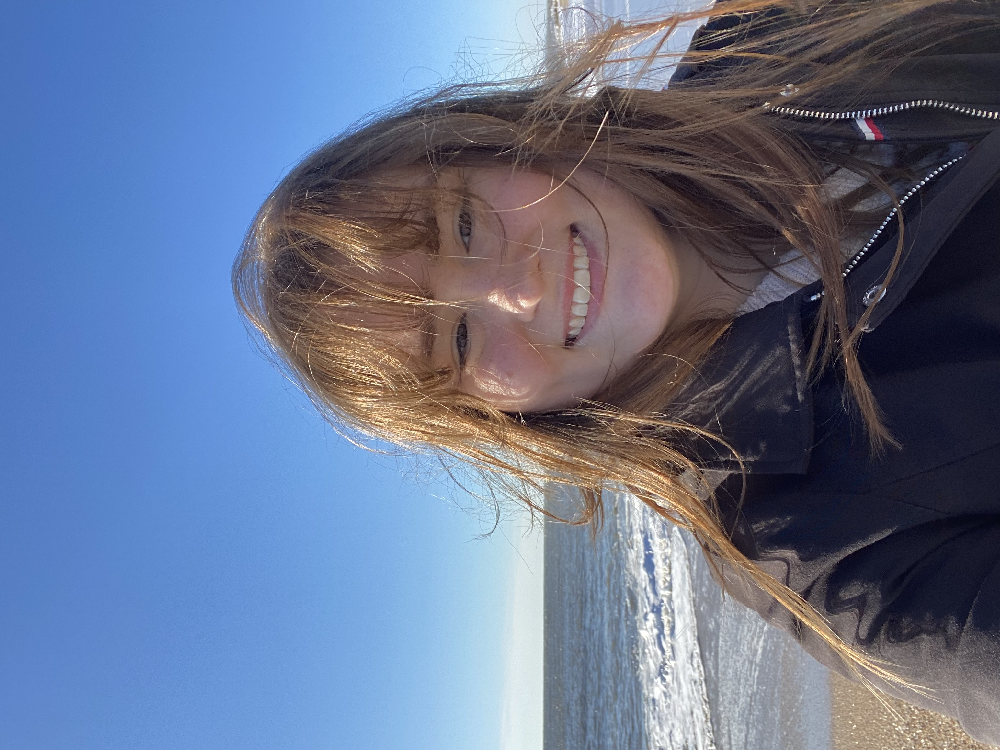

Hello!
I am a second-year Ph.D. student at the University of Georgia with a passion for plant biology, genetics, and bioinformatics. My research focuses on understanding how genetic variation contributes to plant traits and evolution, using computational approaches to explore complex genomic data. Beyond research, I am passionate about teaching, mentorship, and creating opportunities for students to engage in scientific discovery. My long-term goal is to become a biology professor at a primarily undergraduate institution, where I can combine research and teaching to inspire the next generation of scientists. I believe some of the most rewarding moments in science come from asking questions, exploring new ideas, and sharing the excitement of discovery with others.
